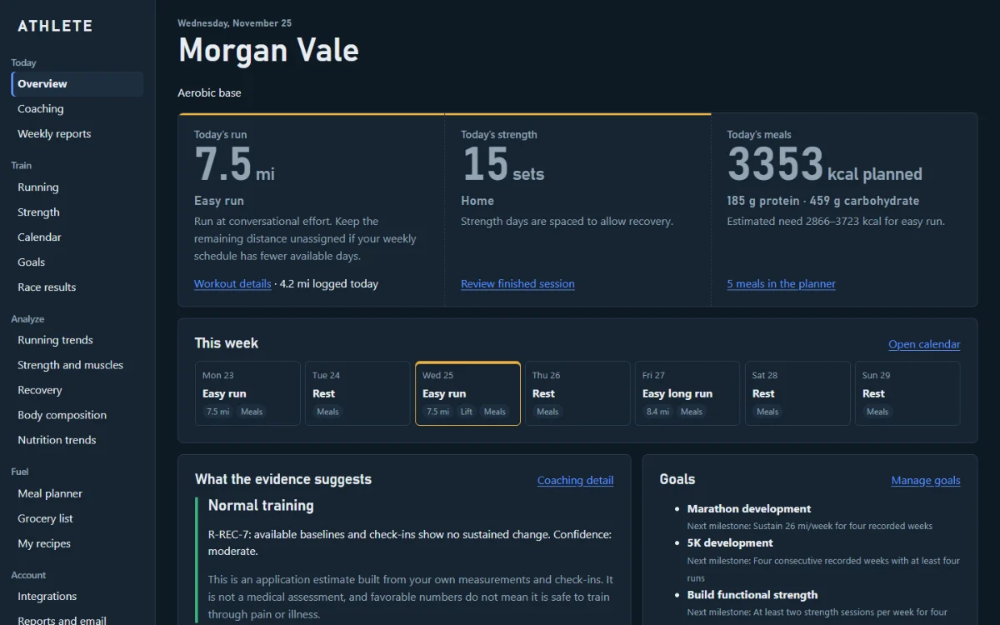
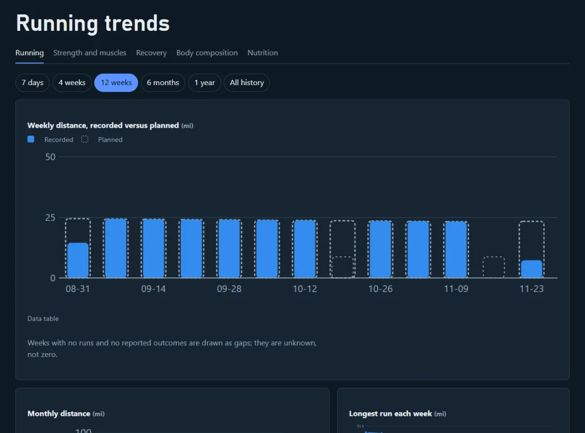
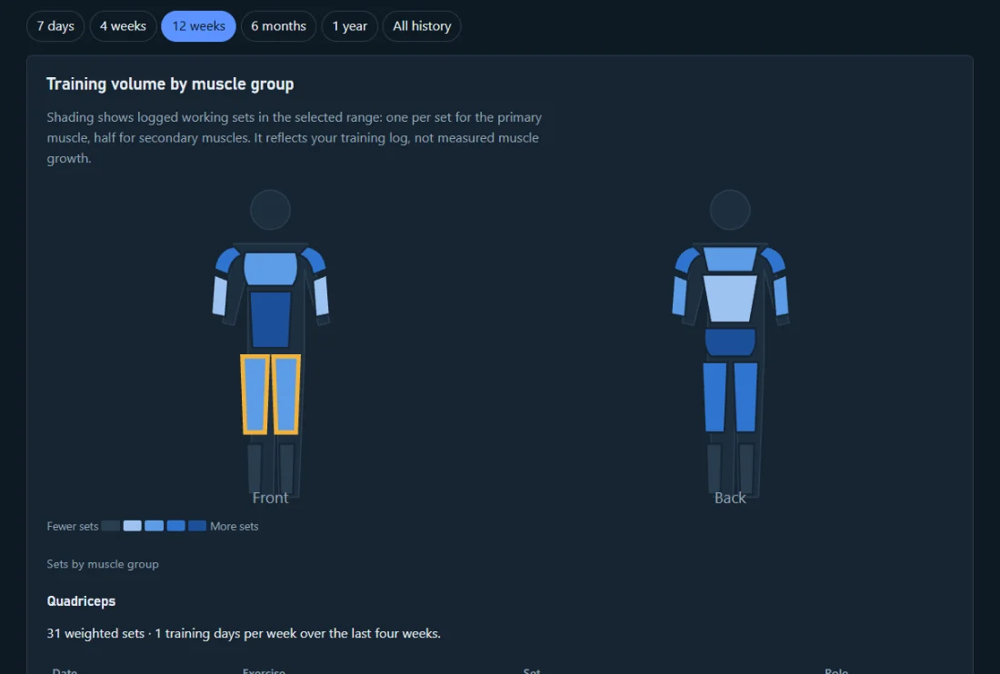
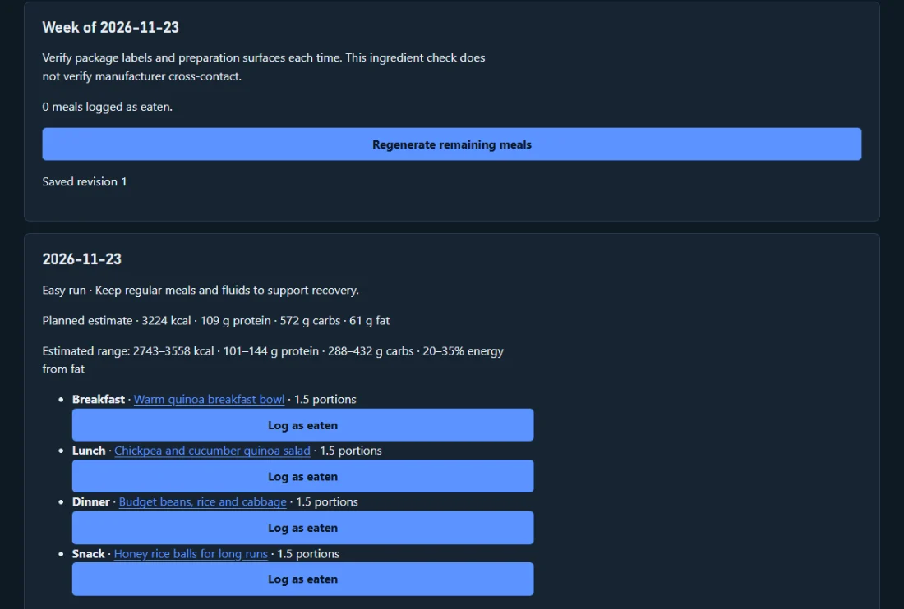
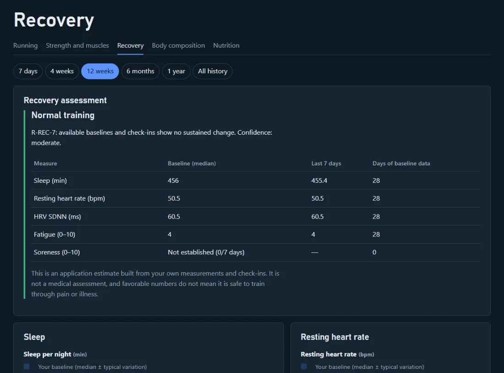
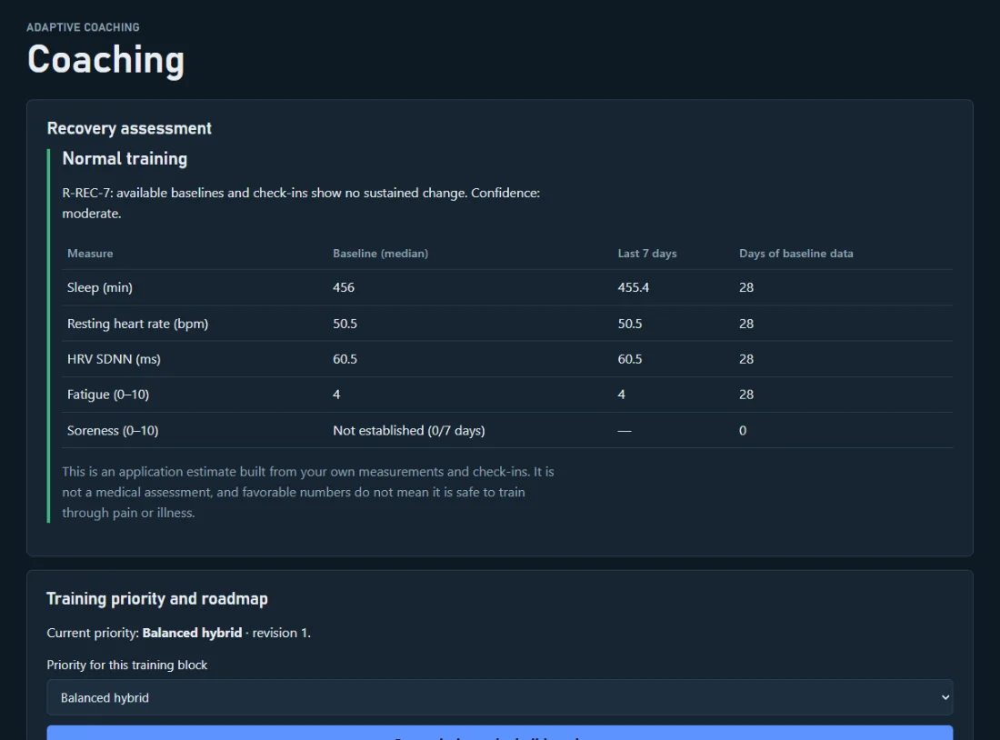
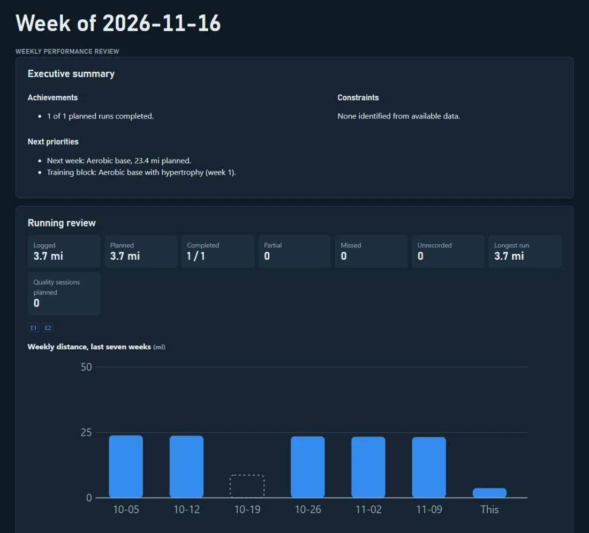
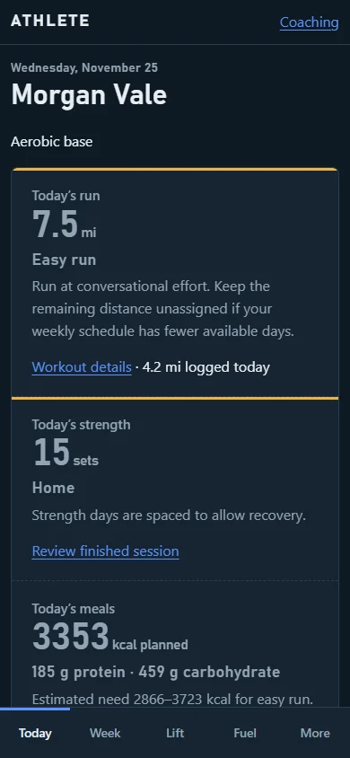
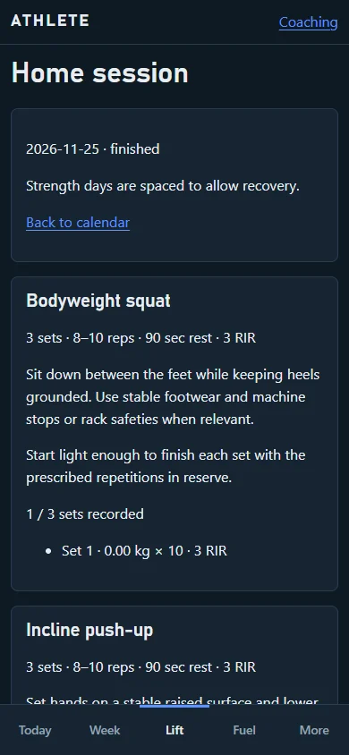

> ./athlete --status
ATHLETE
A private coaching app that plans running, strength training, meals and recovery together, then reviews each week and adjusts the next one from what actually happened.
- Free to use
- Private beta in preparation
- Invitation only
Registration is closed while hosting, email and security checks are completed. There is no waiting list or sign-up form yet.

> cat features.md
One plan, five parts that talk to each other
Most training apps handle one thing. ATHLETE keeps running, lifting, food and recovery in one weekly plan, so a hard long run changes the next day's lifting and the meals that week.
running
Running plans built from recorded training
Weekly mileage starts from what you have actually run, not a guess, and grows in small steps only after consistent, well-recovered weeks.
- Easy, long and quality sessions with effort guidance
- Weeks with missing data count as unknown, never as zero
- Trends for distance, long runs and pace

strength
Strength sessions that respect your key runs
Routines fit your equipment and schedule, keep heavy leg work away from long runs and intervals, and suggest load increases only after you have earned them.
- 85-exercise library with substitutions
- Estimated strength trends and personal records
- Muscle-group map of the sets you actually logged

nutrition
Meal plans and grocery lists that follow your training
Seven-day menus scale with each day's training load and are checked against every allergy and exclusion you enter, including phrases such as "tree nut allergy". Then they become a grocery list priced against your budget.
- 105 original recipes built on USDA FoodData Central nutrients
- Your own recipes, leftovers and pantry tracking
- Ingredients with unknown allergen information are treated as unsafe

recovery
Recovery compared with your own baseline
Sleep, resting heart rate, HRV, fatigue and soreness are compared with your usual range, not someone else's. One odd reading never changes the plan; a sustained shift does.
- Clear categories, from "normal training" to "stop and get it checked"
- Says "insufficient data" instead of inventing a score
- Pain or illness pauses the affected training

adaptive coaching
You pick the priority; it shows its reasoning
Choose what matters this block (marathon endurance, 5K speed, muscle and physique, or a balance) and ATHLETE lays out provisional training blocks to a race date. Every change to your plan records what changed, the evidence behind it and the rule it followed.
- Recovery weeks, tapers and post-race recovery built in
- Goal milestones without made-up "% to goal" numbers
- Race estimates only from recent official results

weekly reports
A weekly review, ready on the morning you choose
Each week ATHLETE reviews the week you just finished, proposes the next week's runs, lifts, meals and groceries, and sends a short email with a sign-in link. The email never contains your training or health details.
- Plans you have already accepted are never overwritten
- Evidence references for every major recommendation
- One-click unsubscribe, and reports stay in the app

> open --device phone
Built for the gym floor and the run
Large buttons, quick set entry that remembers your last set, and a bottom tab bar. It can be installed to a phone's home screen; it does not store your data on the device.


> ls integrations/
Bring your own training data
Garmin
Import FIT activity files.
Apple Health
Import the Health app export: runs, sleep, resting heart rate, HRV and weight.
Evolt 360
Enter body-composition scans by hand.
Strava
Not connected while permitted use is reviewed.
There is no automatic wearable sync yet. Each integration is shown exactly as it works today.
> cat PRIVACY.md
Private by design
Your data stays yours
No ads, no data sales, and no health data sent to AI services. Export everything or delete your account at any time.
Isolated per athlete
Each athlete's records are separated by database row-level security, with verified email sign-in.
Honest about limits
General training and nutrition guidance, not medical advice. Wearable and body-scan numbers are estimates, and allergy filtering cannot rule out cross-contact.
> cat stack.txt
How it's built
A Node.js app with server-rendered pages and accessible SVG charts, PostgreSQL with separate database roles and row-level security, deterministic coaching rules with automated tests, and scheduled weekly jobs designed so a retry or restart never sends the same email twice.